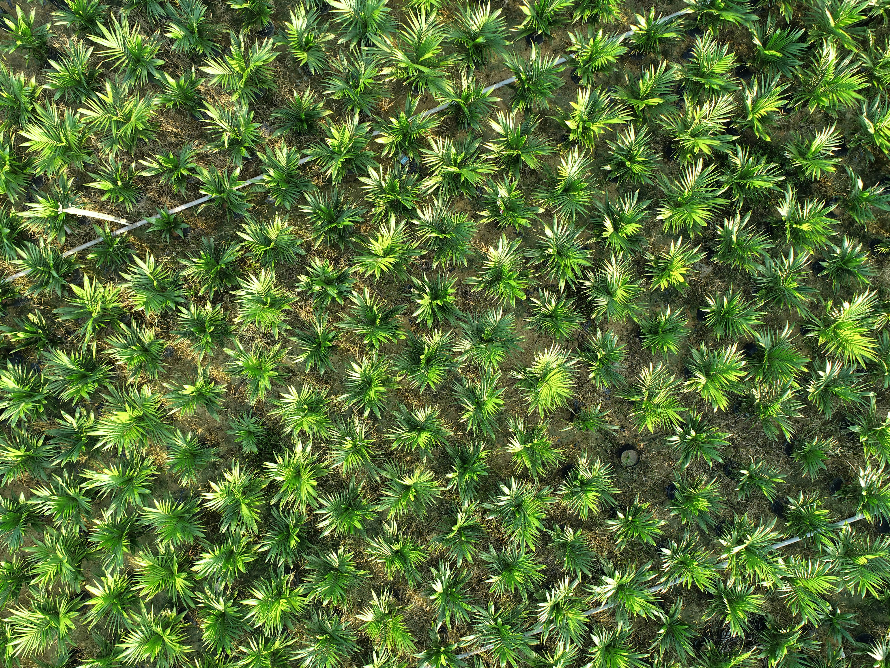

Palm Oil's Affect on our Environment

Photo of a Palm Plantation by Pexels.
Palm oil is a common and cheap oil that is primarily used in cooking. The industry behind this oil however, does more harm than good. Oil palm trees, the tree that bears the fruit palm oil comes from, is only grown in the more tropical parts of our world. The deforestation that is casued by the commerical farming of this plant affects the biodiversity in these countries as many native plants are destroyed and animals who habitat these areas have to relocate or are killed. Sustainable alternatives to the methods of farming palm oil exsist, however many large corporations chose to go a cheaper, hazardous route.